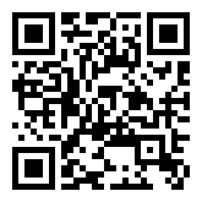

在线要饭中 · 服务器还没欠费 · 碗已擦亮
🥣
赛博乞讨 在线要饭
服务器在云端，碗在人间。
本人佚名网友一枚，守着一台租来的小服务器过日子 —
路过的大佬行行好，随手投喂，功德 +1。
这台小服务器 24 小时不敢睡觉地守着这一页，每月雷打不动要交十几美元。新人抵扣金总有烧完的一天 — 烧完那天，它就得靠各位大佬的接济续命了。
域名是免费领的，HTTPS 证书是免费签的，能省的我都省到了极致。唯独服务器的租金，是这个世界上少数白嫖不到的东西之一。
万一哪位大佬心情好，赏的钱够它多活一个月呢？互联网的精神不就是这样 — 一群陌生人，莫名其妙地互相成全。这个站存在本身，就是一次小小的行为艺术。
投喂是缘分，敲木鱼是心意。点一下，功德 +1 — 佛祖和服务器，都记在心里了。
扫码或复制地址，在您的钱包里完成转账即可。
钱包地址只能收款、不能转出，公开它没有任何被盗风险。

TSef、结尾 SdCNt、总长 34 位 — 防剪贴板木马篡改地址，这是币圈最常见的偷钱手法。本站尚未收到第一笔投喂。榜一大佬的位置，正空着 — 会是路过的你吗？
（放心：上榜也匿名，本站不收集、不公布任何人的信息。）
全部喂给这台服务器交租金，让它能一直在线陪大家玩。它就是个无情的吞金兽，除此之外别无他用 — 本站不卖课、不拉群、不承诺任何回报，纯属图一乐。
安全。收款地址就像银行卡的“只进不出”公开账号：任何人都能往里打钱，但没人能凭它把钱转走 — 能转钱的私钥从不联网、不出现在任何页面里。真正要防的是骗子冒充我另给地址，所以请只认本页这一个。
不能，区块链转账是泼出去的水。所以菜单才反复念叨：核对首尾、先小额。真转错了，我在链下也捞不回来 — 这题神仙来了也摇头。
不会。它就是一个纯静态的单页：没有账号、没有表单、没有统计代码、没有 Cookie。你来了，看一眼，敲敲木鱼，走了 — 不留痕迹，我也不知道你是谁。这年头，这么干净的网站不多了。